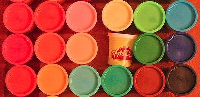

Modeling Challenges
This head was modeled gradually over the course of two weeks, working for at least an hour every day. Most of that time was not spent modeling,
however, as I was learning the ins and outs of Blender as I went along, dealing with its great many quirks. In the end, I feel like I have not even
scratched the surface of learning this massive application. It was very daunting to start a project without any idea of how to complete it. In the
end, the result is mostly what I expected, but with a few minor differences.
What did I learn from this? First of all, I learned that modeling a human head to any degree of accuracy in Blender (or any other
3D package for that matter) is definitely a non-trivial task. It is very tedious process, and I would not recommend a project of this scale for
someone whose last 3D modeling experience was with Play-Doh in kindergarten.
Second, the tedium is not nearly as bad as the frustration that one will certainly experience while using Blender: there is a shortcut key for absolutely everything which requires a great deal of
memorization and retraining one's brain. For instance, the shortcut key to pan around an image in Photoshop is "H". In Blender, this hides the
currently selected object or face. For someone who is used to working in Photoshop a lot, this behavior and its solution (use Middle Mouse Button
+ Shift to pan, obviously...) is very frustrating.
Third, the documentation that is available (or not, as the case may be) for Blender is either incomplete, outdated, or non-existent. To learn how
to perform even basic tasks such as create an edge between two vertices (requires the creation of two faces...) is very tough to find.
Finally, in order to have a chance at printing a 3D model of the head, I opted not to model the ears of my subject. Doing so would have required the addition of myriad support structures, which I neither had the time nor the inclination to include. The final product looks something akin to a character from the Sims, except far more terrifying.
Overall, creating this model was about a hundred thousand times harder to create than a good-looking website through which to present it (many thanks to the developers of Twitter Bootstrap). I have gained a new appreciation for 3D animators and the incomprehensibly massive amount of artistic ability and talent that they require to do their jobs. As for my career at Pixar, I think I'll stick to Play-Doh.

Photo Credit: Hsing Wei


{kind=link}
{kind=link}
{kind=link}
{kind=link}
{kind=link}
{kind=link}